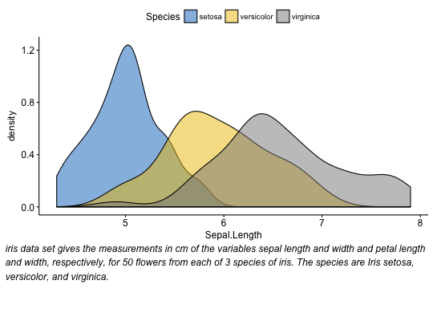

Draw a paragraph o text. Splits a long text into multiple lines (by inserting line breaks) so that the output will fit within the current viewport.
ggparagraph(text, color = NULL, size = NULL, face = NULL, family = NULL, lineheight = NULL) # S3 method for splitText drawDetails(x, recording)
# Density plot density.p <- ggdensity(iris, x = "Sepal.Length", fill = "Species", palette = "jco") # Text plot text <- paste("iris data set gives the measurements in cm", "of the variables sepal length and width", "and petal length and width, respectively,", "for 50 flowers from each of 3 species of iris.", "The species are Iris setosa, versicolor, and virginica.", sep = " ") text.p <- ggparagraph(text, face = "italic", size = 12) # Arrange the plots on the same page ggarrange(density.p, text.p, ncol = 1, nrow = 2, heights = c(1, 0.3))